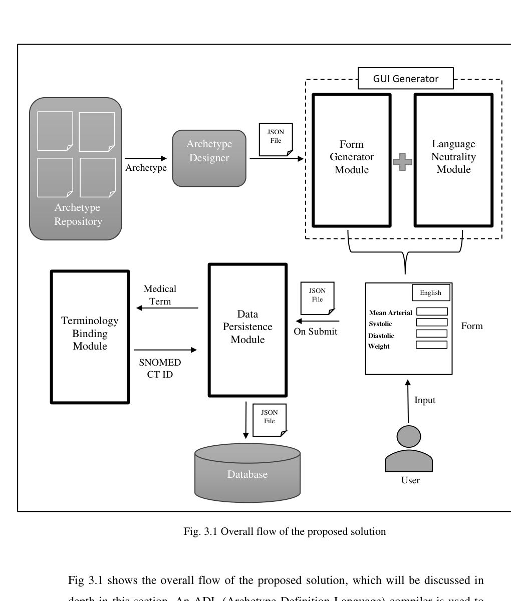
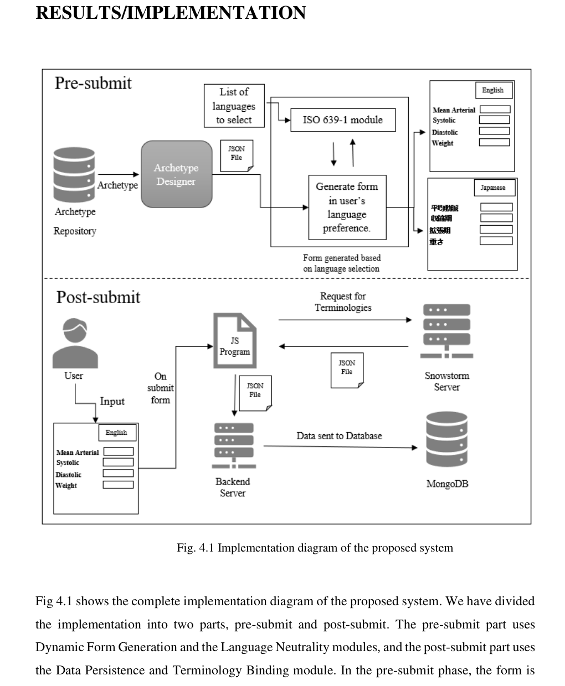
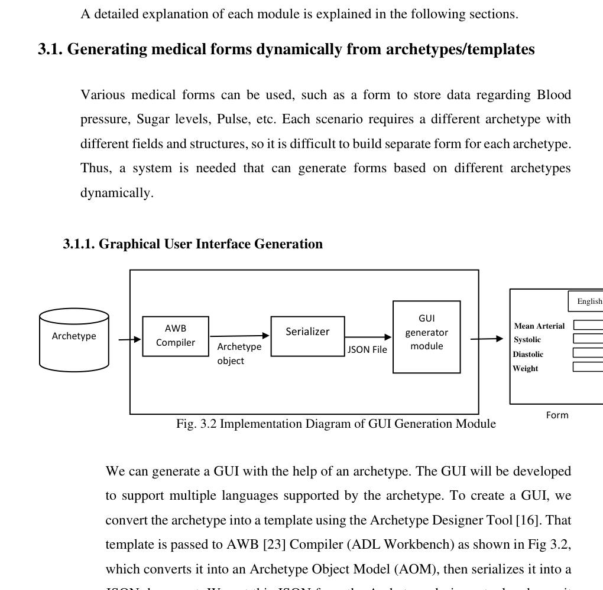
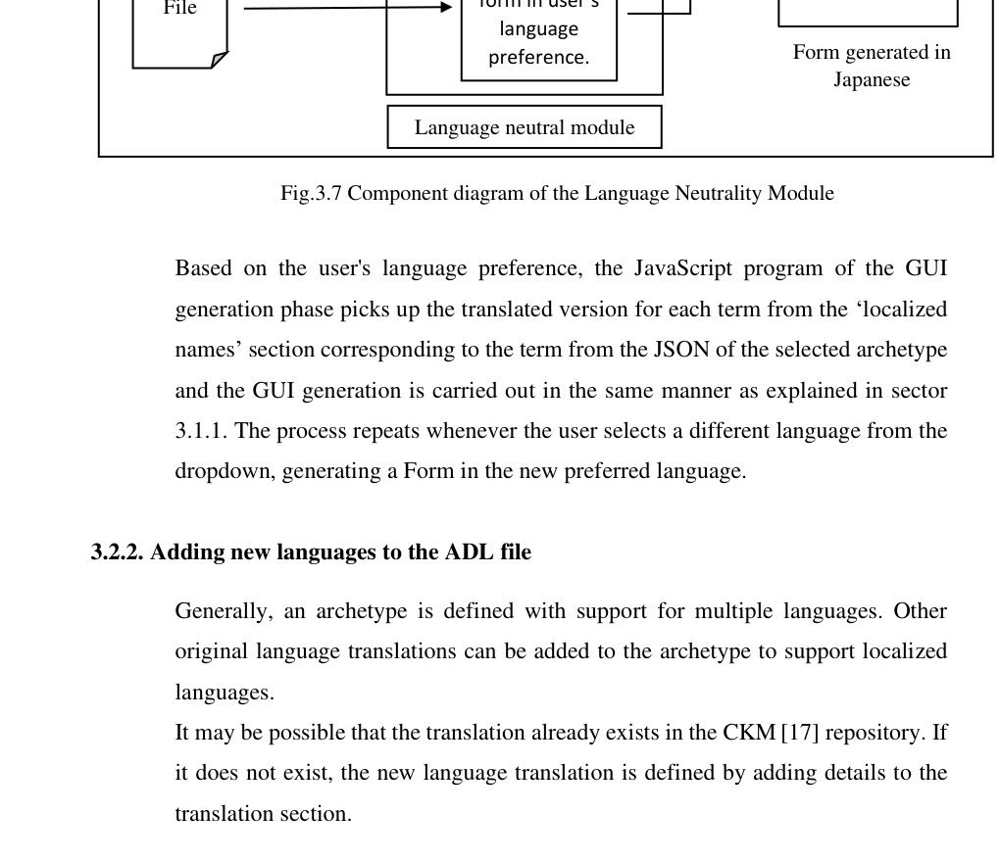
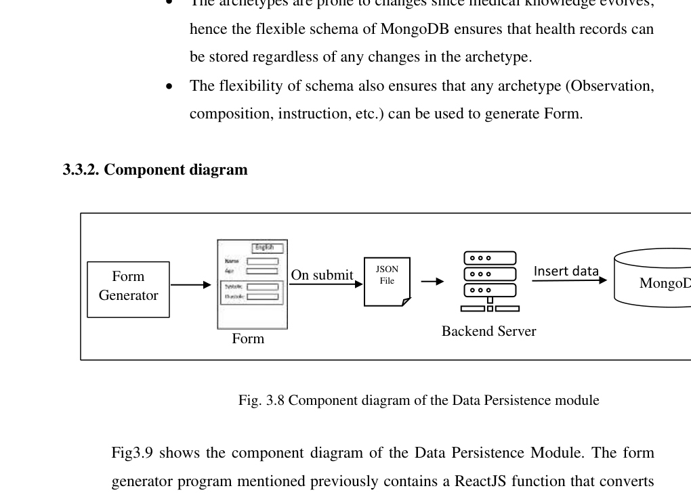
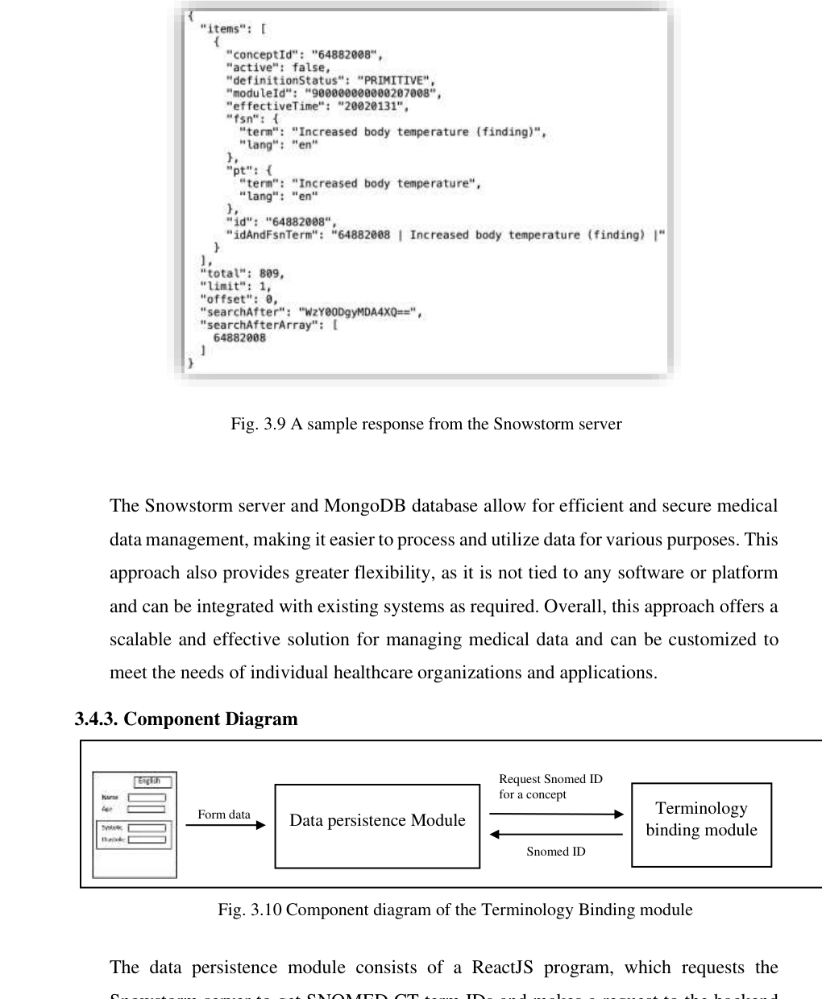

Project Elevator Pitch
Have a 60–75 second answer ready. Then dive into modules if they ask.
Problem
Static medical forms don’t scale; language barriers hurt usability; EHR exchange needs syntactic + semantic interoperability.
Architecture
Archetype → JSON → React GUI → (language select) → Submit → Snowstorm SNOMED IDs → Node API → MongoDB.
Why these tools
openEHR for structure; React for dynamic UI; MongoDB for flexible JSON clinical docs; Snowstorm for SNOMED binding.
What I can defend
Form generation from JSON tree, LangSelector, recursive term binding, Express insertOne, interoperability definitions.
Challenges
Datatype→widget mapping; multilingual labels; CORS/Nginx for Snowstorm; evolving archetype schemas.
Evaluation
Forms generate for archetypes (e.g. blood pressure, health risk); language switch works; submissions land in MongoDB with termBindings.
Problem & Objectives
From the project report abstract — these four objectives are your interview backbone.
Why static forms fail
Clinical needs change. If forms are hard-coded, adding a field means redesigning the whole UI and redeploying. Doctors/domain experts should drive structure via archetypes — not wait on developers for every field change.
Four objectives
- Generate medical forms dynamically from archetypes/templates
- Provide language neutrality in the generated form
- Persist form data in a suitable database
- Terminology binding using SNOMED CT
Motivation (India / usability)
Language barriers in healthcare UIs reduce adoption. Multilingual forms improve usability in diverse populations. Standardization (openEHR + SNOMED) enables exchange without ambiguity.
Novelty (report)
Combination of (1) multilingual dynamic forms from archetypes, (2) SNOMED CT semantic binding, (3) MongoDB flexible persistence — not just one of these alone.
Must-Know Concepts
If you only memorize definitions, memorize these. Interviewers will probe them.
EHR
Electronic Health Record — digital patient medical information accessible to clinicians/systems.
openEHR
Open standard for EHR structure/content. Separates reference model (software) from clinical knowledge (archetypes/templates managed by clinicians).
Archetype
Reusable clinical model for a concept (e.g. Blood Pressure) with fields, constraints, datatypes, translations. Written in ADL, can be compiled to AOM and serialized to JSON.
Syntactic interoperability
Systems can exchange structured data using a shared format/model (here: openEHR archetypes / standardized structure).
Semantic interoperability
Systems share meaning of terms. “Systolic BP” means the same concept everywhere — achieved via SNOMED CT IDs, not just translated labels.
SNOMED CT
Huge multilingual clinical terminology. Concepts have IDs. Bound via local Snowstorm server API (/snomed/MAIN/concepts?term=...).
Full Workflow — Diagrams + Explanation
The report splits the system into pre-submit and post-submit. Learn both phases cold.
Pre-submit
- Dynamic Form Generation module
- Language Neutrality module
- User fills form in chosen language
Post-submit
- Terminology Binding (Snowstorm / SNOMED CT)
- Data Persistence (Node → MongoDB)
- Stored JSON includes concept IDs

Source: Project_Report_UEHR11.pdf · Fig. 3.1 Overall flow of the proposed solution

Source: Project_Report_UEHR11.pdf · Fig. 4.1 Implementation diagram of the proposed system
flowchart TB AR["Archetype / Template
ADL via Archetype Designer"] --> AOM["AWB Compiler → AOM"] AOM --> JSON["Serialize to JSON
fields · constraints · localizedNames"] JSON --> GUI["React GUI Generator
InputComp tree walk"] GUI --> LANG["Language Neutrality
ISO 639-1 dropdown"] LANG --> FORM["Multilingual clinical form"] FORM --> SUB["User Submit"] SUB --> SNO["Snowstorm GET
term → SNOMED conceptId"] SNO --> PAY["JSON payload + termBindings"] PAY --> API["Node/Express POST :5001"] API --> MONGO[(MongoDB document store)]
Obtain / design archetype
Clinical concept (e.g. Blood Pressure) is modeled as an openEHR archetype/template (Archetype Designer / CKM). Contains attributes, constraints, datatypes, and translations.
Compile + serialize to JSON
ADL → Archetype Object Model (via AWB) → JSON. JSON holds tree structure, inputs, localizedNames, optional termBindings, languages list.
Dynamic GUI generation (React)
Frontend fetches /{rmType}/{archetypeId}.json, walks archetype.tree.children, and renders InputComp widgets based on datatype (DECIMAL / TEXT / CODED TEXT → number, text, dropdown).
Language neutrality
User picks language from dropdown (LangSelector). Labels are taken from archetype translations / localized names for that ISO code (en, ja, it, …). Form regenerates labels without new hard-coded UI.
User fills + submits
Patient fields + clinical fields collected. On submit, frontend recursively builds a filtered JSON of values (and empty branches pruned).
Terminology binding (SNOMED CT)
For nodes without existing SNOMED bindings, call Snowstorm: GET /snomed/MAIN/concepts?term=.... Attach termBindings["SNOMED-CT"] = conceptId so meaning is language-independent.
Persist in MongoDB
POST http://localhost:5001/ → Express insertOne(req.body) into MongoDB. Flexible document schema fits evolving archetypes (Observation, Composition, etc.).
sequenceDiagram
participant U as User
participant R as React Form
participant S as Snowstorm
participant N as Node Express
participant M as MongoDB
U->>R: Select archetype + language
R->>R: Fetch JSON + render InputComp tree
U->>R: Fill fields + Submit
loop each medical term needing binding
R->>S: GET /snomed/MAIN/concepts?term=...
S-->>R: conceptId
end
R->>N: POST / JSON + termBindings
N->>M: insertOne(document)
M-->>N: ack
N-->>R: result
R-->>U: Form Submitted Successfully
Four Modules (Deep Dive)
A. Dynamic GUI Generation

What it does
Converts archetype JSON into a usable medical form. Traverses data attributes and creates inputs according to constraints.
Datatype → widget mapping
- DECIMAL / Quantity → numeric input
- TEXT → text input
- CODED TEXT → dropdown of valid codes
B. Language Neutrality

en, ja). The React LangSelector switches ln state; InputComp displays the label for the selected language.C. Data Persistence (MongoDB)

| Why MongoDB | Explanation |
|---|---|
| Native JSON/BSON | Form payload is already a document tree |
| Flexible schema | Archetypes evolve; different RM types (Observation, etc.) differ in shape |
| Scalability | Handles growing volumes of health-record documents |
| Simple backend | Express insertOne is enough for MVP persistence |
D. Terminology Binding (SNOMED CT / Snowstorm)

Technologies — Why Exactly These?
| Technology | Role | Why chosen | Why not / alternatives |
|---|---|---|---|
| openEHR archetypes | Clinical model source | Standardized, clinician-maintainable, multilingual, interoperable structure | Hard-coded forms; ad-hoc hospital schemas without standard exchange |
| JSON | Interchange format | Natural web format; easy for React; stores in MongoDB directly | XML possible (common in healthcare) but heavier for this JS stack |
| React | Frontend | Component tree maps cleanly to archetype tree; fast dynamic UI | Static HTML forms; server-rendered only UIs harder for language switching |
| Node.js + Express | Backend API | Lightweight JSON POST → Mongo insert; same language family as frontend | Spring/Django heavier for this MVP persistence layer |
| MongoDB | Persistence | Schema flexibility for evolving archetypes; document = form submission | Strict SQL schema churn; Firebase couples to vendor; Redis not durable primary store |
| SNOMED CT | Semantics | Global clinical vocabulary; concept IDs for true semantic interoperability | Free-text only; ICD alone is classification-focused, not the same coverage |
| Snowstorm + Elasticsearch | Terminology server | Official/local SNOMED API; concept search by term | Remote-only terminology services; harder offline/demo control |
| Nginx | Proxy for Snowstorm | Route /snomed, help with CORS for browser calls | Calling Snowstorm cross-origin directly hits browser CORS issues |
| Archetype Designer / AWB | Authoring & compile | Create/export archetypes; ADL→AOM→JSON path | Hand-writing JSON clinical models error-prone |
Runtime Stack (Ports & Components)
Code-Level Talking Points
Be ready for “show me what the code does” — based on Form.jsx and backend/api.js.
Form.jsx
- Loads archetype JSON by route params
rmType,archetypeId - Adds patient_id / patient_name fields
LangSelectorsetsln- Recursive
filterUtilbuilds submission tree getSnomedData/getTermBindingsattach concept IDsaxios.post('http://localhost:5001/', data)
backend/api.js
- Express app, CORS enabled
POST /→insertOne(req.body)- Port 5001
- Minimal API focused on persistence
Interview Q&A Bank
InputComp; widget type comes from archetype datatype/constraints — not a fixed HTML form per disease.insertOne into MongoDB → success alert / navigate home.How Would You Improve It?
Product / UX
- Remove optional fields to reduce clutter (report mentions this)
- Better validation messages per constraint
- Offline/poor-network handling
Engineering
- Move SNOMED binding server-side
- Auth, RBAC, audit trail
- Input validation + rate limiting
- Tests for datatype mapping
Interoperability
- Export FHIR resources
- Stronger use of archetype termBindings when present
- CKM sync for archetype updates
AI stretch (bonus)
- Suggest SNOMED codes with ranking UI
- NLP assist for free-text → coded entries
- RAG over clinical guidelines beside the form
Quick-Hit Definitions
en, ja, it) used to tag archetype translations and the language dropdown.